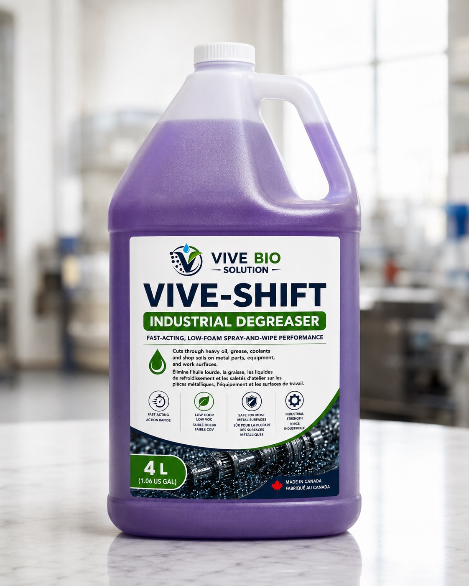
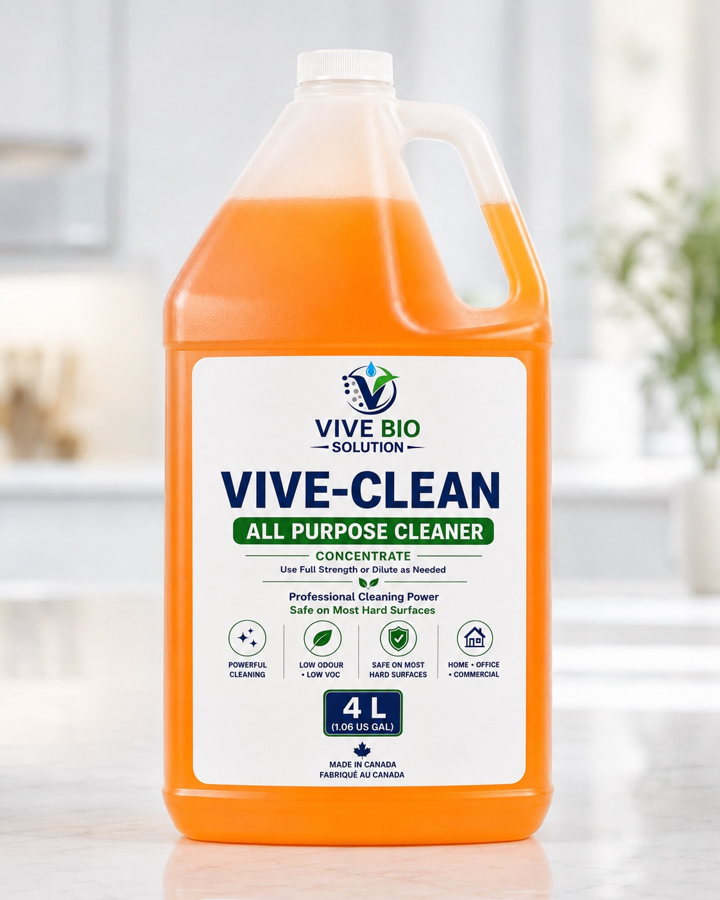
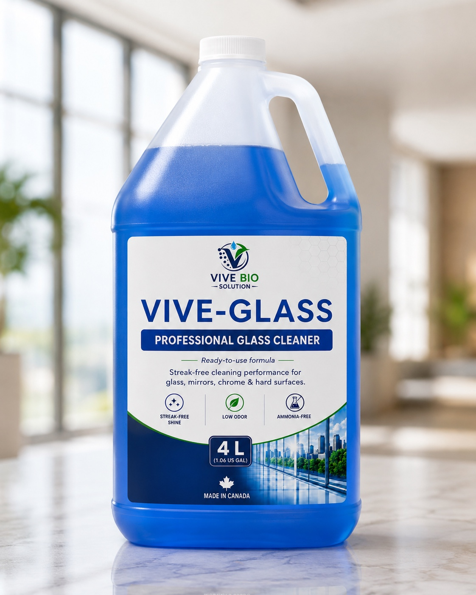
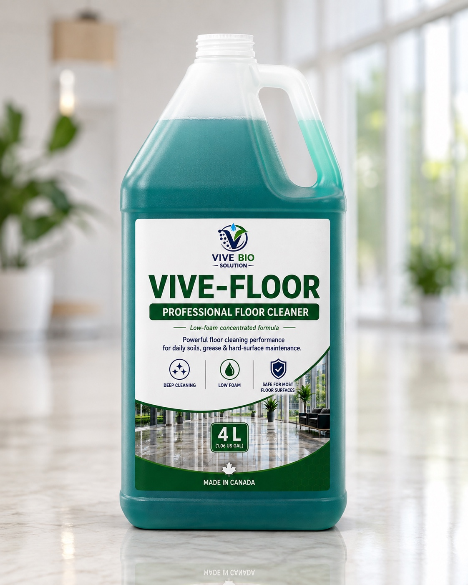
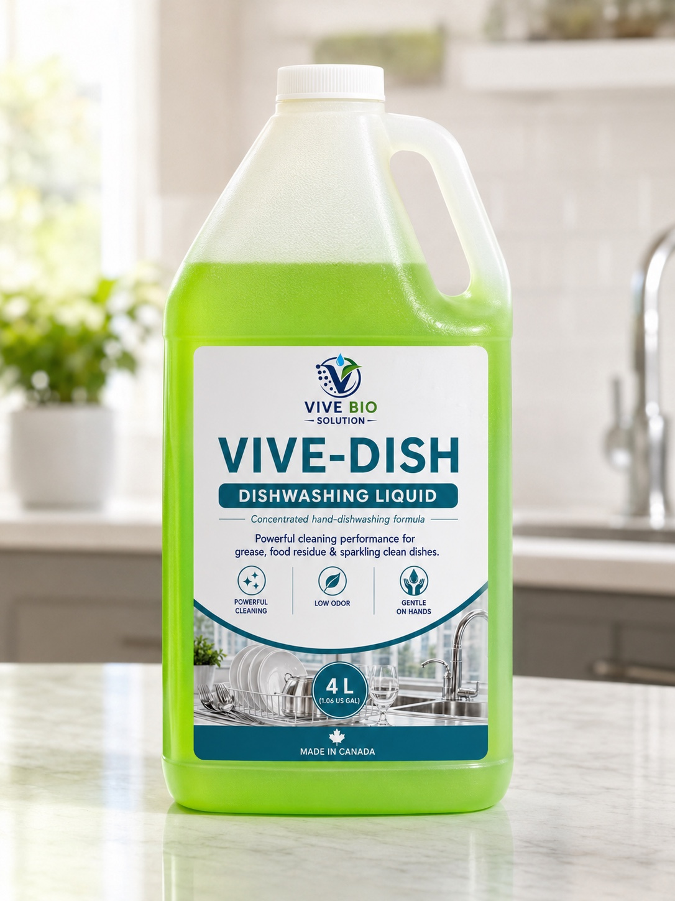
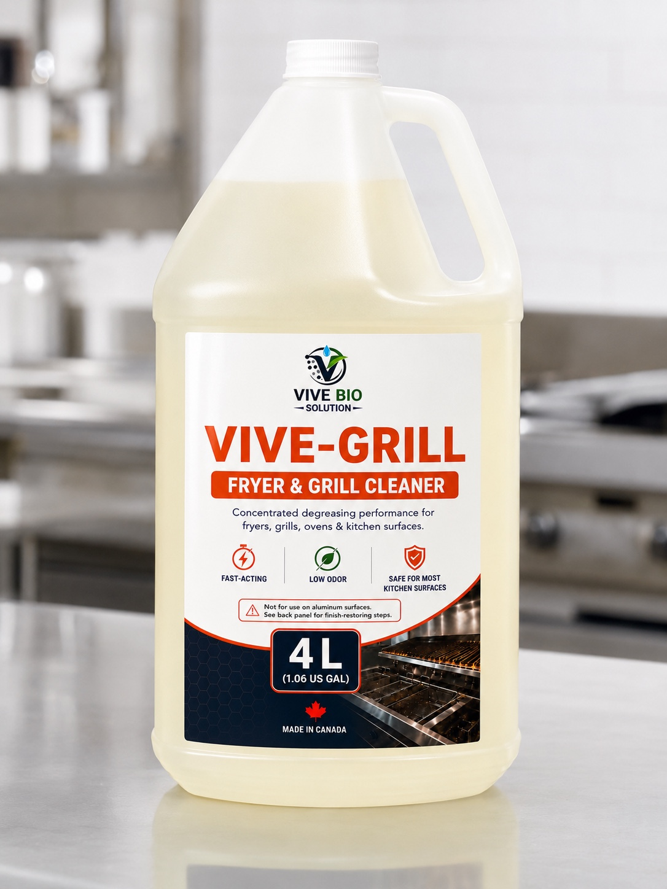
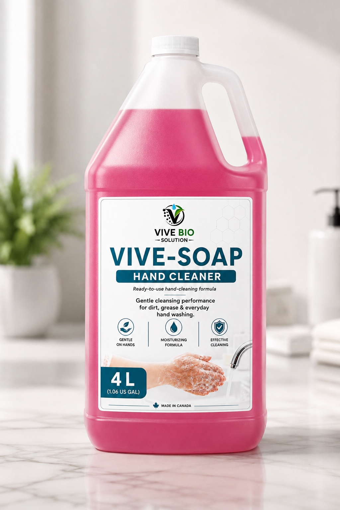

Heavy-duty cleaning solutions engineered for demanding industrial environments

The butyl-free degreaser built for Canadian industry.
VIVE-SHIFT is a bio-based, low-VOC industrial degreaser engineered to replace 2-Butoxyethanol (butyl) degreasers without the reproductive hazard classification. Made in Windsor, Ontario with green chemistry — it cuts through machining oils, coolants, hydraulic fluid, and heavy grease on metal surfaces, CNC equipment, and shop floors without the health risks of traditional solvents.
Versatile cleaning solutions for commercial and institutional use

One concentrate. Forty litres of clean.
VIVE-CLEAN is a concentrated bio-based all purpose cleaner designed for industrial and commercial facilities. One 4L jug makes 40 litres of ready-to-use cleaner — cutting your cost per litre dramatically versus ready-to-use competitors. Safe on most hard surfaces including painted metal, concrete, tile, and equipment housings.

Streak-free. Ammonia-free. Lung-friendly.
VIVE-GLASS delivers a professional streak-free finish on glass, mirrors, and chrome without ammonia. Traditional ammonia-based cleaners off-gas in enclosed spaces — VIVE-GLASS uses IPA and bio-surfactants at a skin-safe pH of 6.5–7.2, making it safer for workers cleaning in cabins, vehicles, offices, and production windows.

One jug. Eighty-four litres of clean floor.
VIVE-FLOOR is a high-yield concentrated floor cleaner formulated for industrial and commercial hard floors — concrete, epoxy-coated, ceramic tile, and vinyl. At a 1:20 dilution ratio, one 4L jug produces 84 litres of ready-to-use mopping solution, making it the most cost-effective product in the VIVE lineup.

Plant-derived. Hard on grease. Easy on hands.
VIVE-DISH is a concentrated dishwashing liquid built on bio-surfactants — Decyl Glucoside and CAPB — derived from plant sources. High foam, effective grease cutting at a skin-safe pH of 6.5–7.5. Glycerin conditioning keeps hands from drying out during extended use in commercial kitchens and janitorial applications.

Bio-powered. Heavy-duty. No caustic fumes.
VIVE-GRILL tackles baked-on grease, carbonized food residue, and cooking oils on commercial ovens, grills, fryer exteriors, and hood vents. High-alkaline formula with D-Limonene bio-solvent penetrates carbonized buildup without the chlorinated or caustic fume profile of conventional oven cleaners. Apply, dwell, wipe.

Industrial cleaning. Skin-matched pH. No compromise.
VIVE-SOAP is a moisturizing bio-based hand soap formulated for industrial and commercial environments where workers wash their hands dozens of times per shift. pH 5.5–6.5 matches the skin's natural acid mantle, minimizing irritation and dryness. Propylene Glycol and Glycerin provide genuine moisturizing — not just fragrance masking dry hands.
PRODUCT DETAILS
All our products come in concentrated form, allowing you to dilute them according to your specific needs and reduce costs.
Engineered for commercial and industrial use with proven performance in demanding environments.
Proudly manufactured in Windsor-Essex with quality control and environmental responsibility.